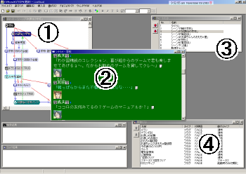

画面構成

①
チャートウィンドウ。チャートを編集するためのウィンドウです。シナリオノードを選択すると、プレビューウィンドウに内容が簡易表示されます。
②
シナリオウィンドウ。シナリオを編集するためのウィンドウです。
③
チャートリストウィンドウ。チャートは複数作ることができ、それらを管理するためのウィンドウです。
（詳細）
④
変数リスト
ウィンドウ。変数を管理するためのウィンドウです。
この他、「表示」メニューで以下のウィンドウが出ます。
ビルド結果
プロジェクトをビルドした結果やエラーが表示されます。
検索結果
変数検索をした結果が表示されます。
プレビュー
チャートで選択されたシナリオノードの内容を簡易表示します。